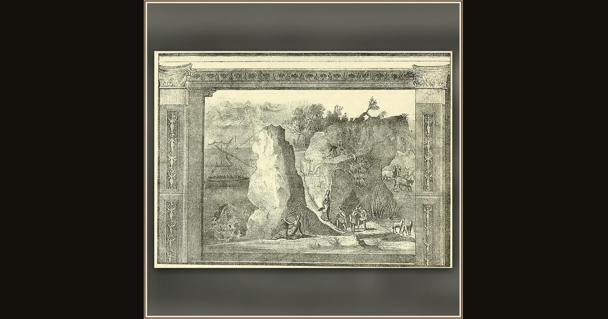

Odysseus' Scouts Reach the Laestrygonian Coast
Unknown artist · early modern · Wikimedia Commons
This calm view is the quiet before the slaughter: an early-modern engraver copies the same ancient Roman frieze and frames it inside painted columns. In the deep, sheltered harbor one ship lies moored while the scouts climb toward a spring and the king's daugh